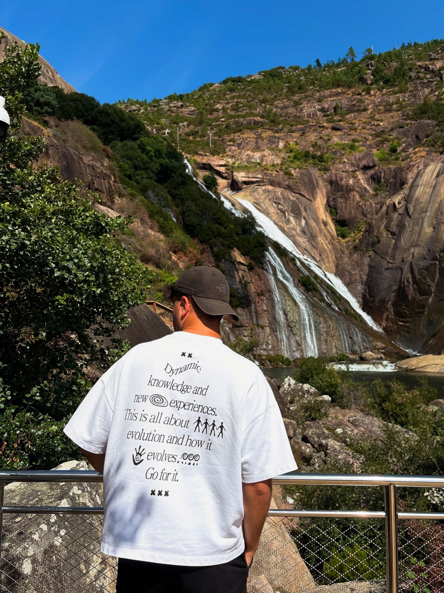
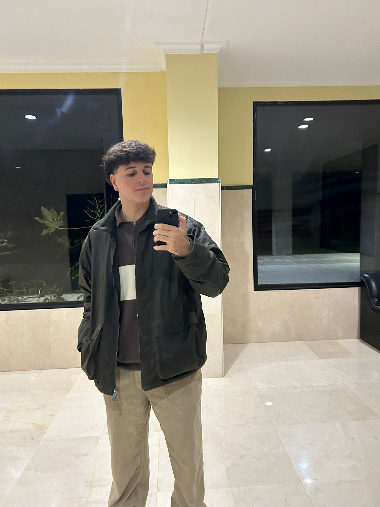
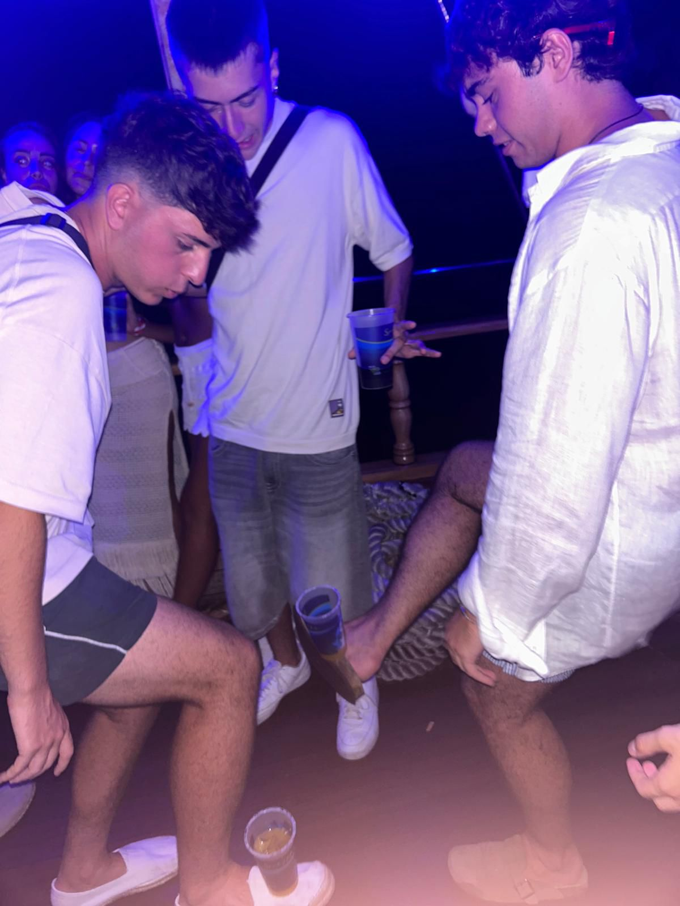
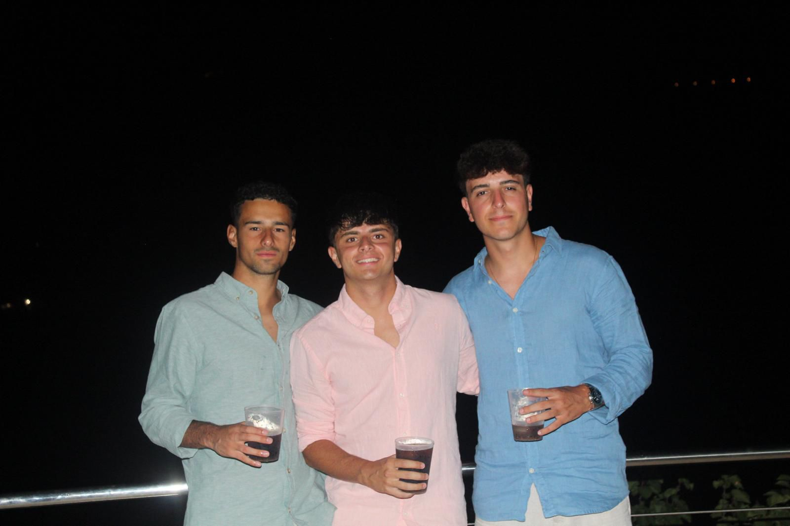

Velasco
Medio | Dorsal 10
Nuestro 10, o mejor dicho, 9,75; el guionista, director y protagonista de su propia peli.
Sorprendente la capacidad que tiene para irse de los rivales y acercarse a las mujeres; más guarro que la campana extractora de la china. Galardonado como “jugador más sobrevalorado” de la 24/25, esta temporada ha conseguido otro récord: primer jugador que retira a un compañero de su propio equipo. Y sí, BigMaik ha decidido colgar las botas tras no tocar un balón desde que se fue a “trabajar” fuera.
El todólogo del equipo, especialista en todos los campos, le preguntas la hora y te suelta una charla de 20 minutos sobre la posición del sol y el musgo de los árboles. Jamás debatas con él; aunque tengas razón, te va a quitar años de vida… y eso que se considera “parcial”.
Sorprendente la capacidad que tiene para irse de los rivales y acercarse a las mujeres; más guarro que la campana extractora de la china. Galardonado como “jugador más sobrevalorado” de la 24/25, esta temporada ha conseguido otro récord: primer jugador que retira a un compañero de su propio equipo. Y sí, BigMaik ha decidido colgar las botas tras no tocar un balón desde que se fue a “trabajar” fuera.
El todólogo del equipo, especialista en todos los campos, le preguntas la hora y te suelta una charla de 20 minutos sobre la posición del sol y el musgo de los árboles. Jamás debatas con él; aunque tengas razón, te va a quitar años de vida… y eso que se considera “parcial”.
Galería



